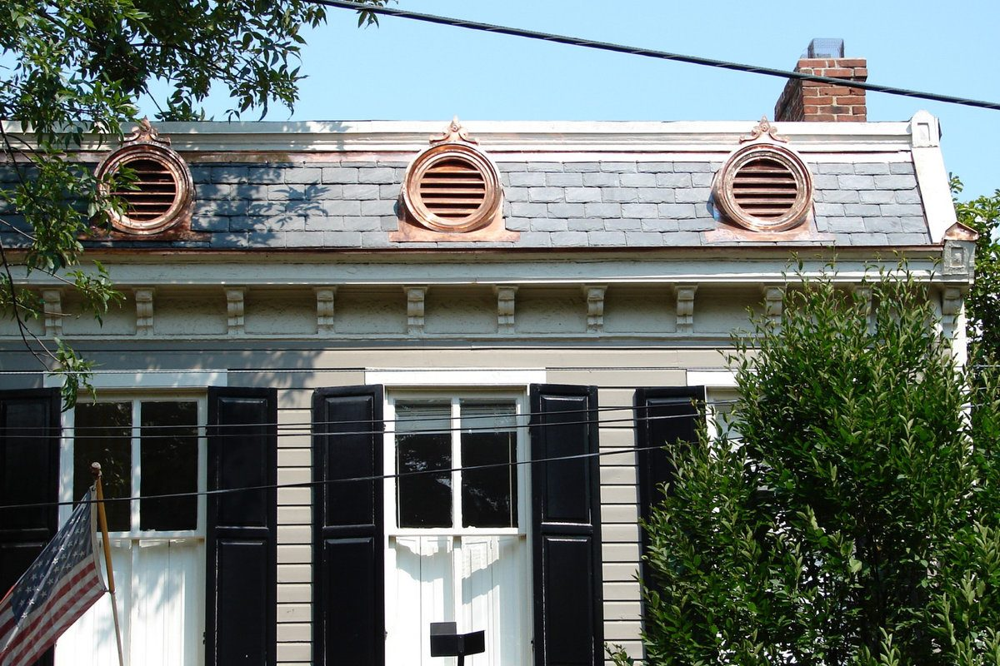
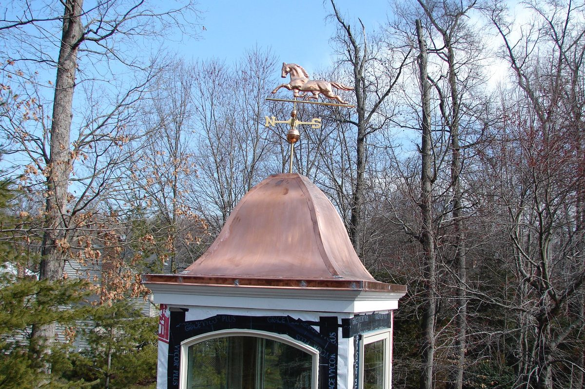
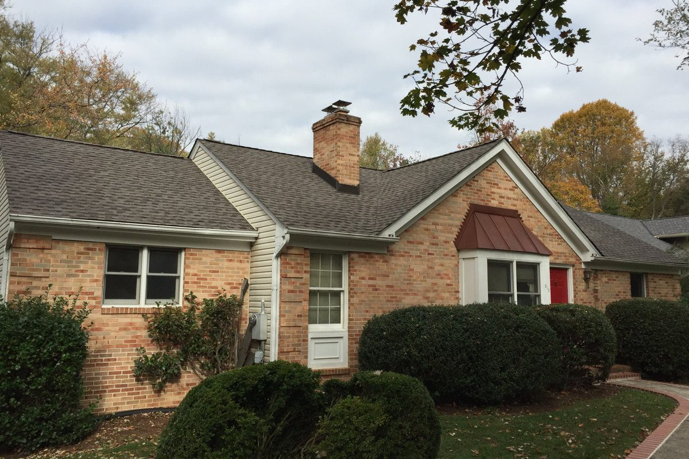
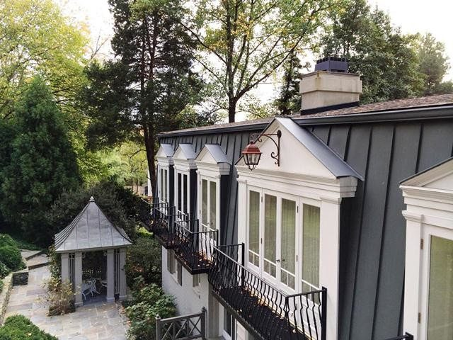
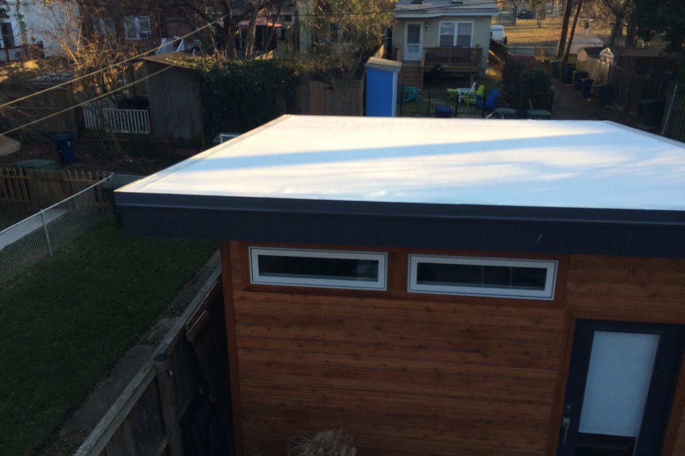

Roof replacement, repair and storm damage across Northern Virginia — with our own crews, our own sheet metal shop, and an estimate that fits on one page.
What we do
From a 1940s slate roof in Rosemont to a flat EPDM porch behind an Old Town parapet — we install and repair all of it.
The workhorse of Northern Virginia. Architectural shingles from GAF, installed with a full ventilation and underlayment system rather than just a new top layer.
Typical service life: 25–30 years
Fabricated in our own sheet metal shop, so panels are cut for your roof instead of ordered to the nearest stock size. Copper, aluminium and steel.
Typical service life: 50+ years
Firestone EPDM and modified bitumen for low-slope roofs, porch roofs and the flat sections that sit behind so many Alexandria parapets.
Typical service life: 20–30 years
Repair, selective replacement and full restoration. The right answer for historic Old Town and Rosemont homes where a tear-off would be the wrong call.
Typical service life: 75–100 years
Concrete and clay tile replacement, plus underlayment renewal — usually the part that has actually failed when a tile roof starts leaking.
Typical service life: 50+ years
A full system — decking, underlayment, ventilation, flashing and surface — not just a new layer on top of an old problem.
See what's included →Leaks, flashing failures, missing shingles and cracked slate. We'll tell you honestly when a repair is the right call — and when it isn't.
Common repairs →Documented properly, and we meet your adjuster on the roof so the claim reflects what actually needs replacing.
How claims work →Why Lyons
Most roofing companies in this area buy their metal and send out a subcontracted crew. We fabricate our own and send our own people. On an old Alexandria house with a bay window, a slate valley and three different roof planes meeting at one point, that difference is the whole job.




Don't wait for a form. Call and you'll reach a person, and we'll get a tarp on it before the damage spreads.
How it works
The part most homeowners dread is the estimate. Ours is one visit, one page, and one number.
Name, a way to reach you, and what's going on. That's the whole form.
A real inspection with photographs — not a walk around the yard with binoculars.
Written, line by line, with the materials named. The number you sign is the number you pay.
Lyons employees, not subcontractors. Magnet-swept for nails before we leave.
Our work
A badge proves we're legitimate. A photograph proves we're good.

Reviews
“Tom is my go-to roofing guy: responsive, professional, local, quick, reasonably priced and excellent quality. This time his team did a gorgeous copper seamed roof over a DR bump out. My bungalow has a little bling! My neighbor also uses Lyons Contracting and said Tom's proposal was the lowest price and best quality of all six. I didn't bother getting other proposals. I know Tom is going to be fair and stand by his work.”
Deborah BrautigamGoogle review · Del Ray“Tom is responsive, professional and honest. I have worked with Lyons at both of my homes, one of which was a 60 year old slate roof. Recently, we neglected to promptly clean our gutters and it caused water to sit on our roof line. Tom came out the next morning and quickly assessed the situation. He informed us that we did not have a larger roof issue and gave us practical advice instead of a bill. This is only my second google review, but when you are lucky enough to find good partner it is worth sharing. I highly recommend Tom and Lyons!”
Catherine SteadmanGoogle review“I had been dealing with another company but it took them three visits, a hole cut in my ceiling, and three weeks to give me a quote. When I reached out to Tom late on a Friday he responded right away and scheduled an appointment for the following Monday… Although his quote was twice as much as the first company's, Tom's quote was for a full replacement and not the band-aid the other company was proposing… And now I don't have to worry about my roof for another 20+ years!”
Caryn ThiboheimGoogle review · AlexandriaQuestions
For a typical Alexandria or Arlington single-family home, an architectural shingle replacement usually lands between $12,000 and $26,000 depending on size, pitch, how many layers have to come off, and how complicated the roof is. Slate, metal and tile run higher. Our roof cost page has a calculator that gives you a real range in about twenty seconds, without talking to anyone.
Yes. Most homeowners replacing a roof do it as a monthly payment rather than a lump sum, and a roof rarely fails at a convenient moment. We can walk you through the options on the estimate visit — see roof cost & financing.
Move what you can out of the way, put a bucket under it, and if the ceiling is bulging, poke a small hole at the lowest point to let the water out. Then call 703-299-8888. See our emergency roof leak page for what we do when we arrive.
For storm and hail claims, yes — we document the damage properly, meet the adjuster on the roof, and make sure the scope reflects what actually needs replacing. Details on the storm damage page.
No. The crew on your roof is a Lyons crew. We also fabricate our own metal in our own sheet metal shop, which is why we can do things a subcontracted crew can't — custom valleys, bay roofs and flashing cut for your house rather than ordered to the nearest size.
Most single-family shingle roofs are a one- to two-day job. Slate, metal and complicated roofs take longer. You'll get a start date and a realistic finish date in writing before anything begins.
Licensed and insured in the Commonwealth of Virginia, and certified by GAF, Firestone and Revere — which is what makes the manufacturer warranties on your roof actually valid.
Areas we serve
We're based on Eisenhower Avenue in Alexandria. Every crew that works on your roof is a Lyons crew — we don't subcontract the work out.
A free, no-pressure inspection and a written estimate you can actually compare.